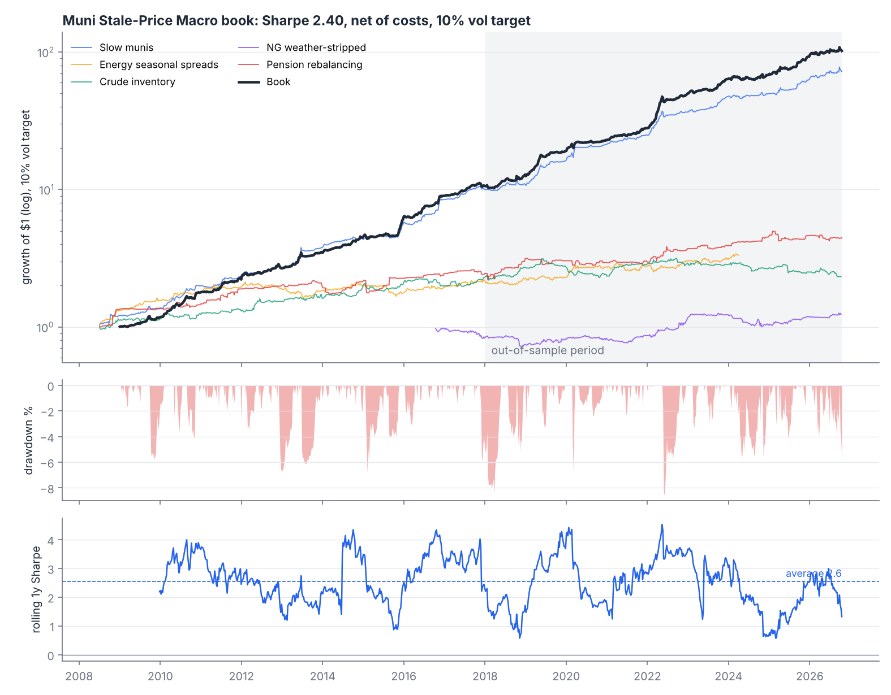
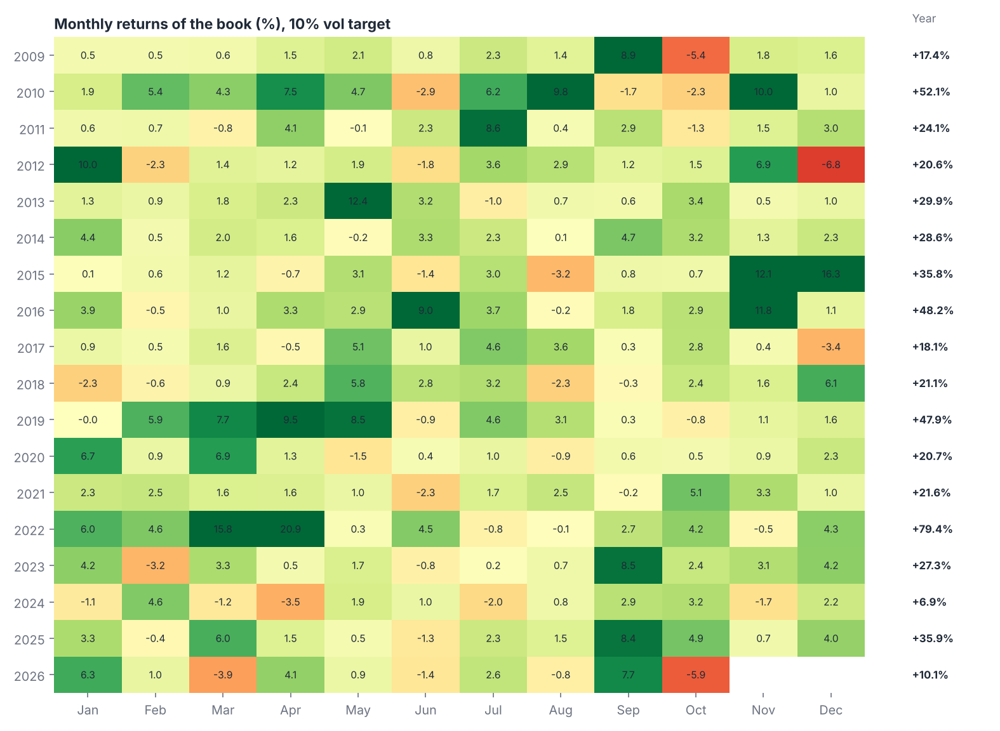
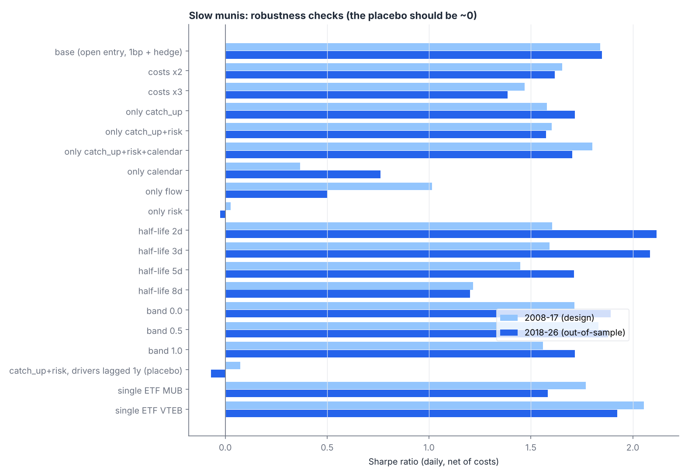

A systematic rates and commodities strategy built on markets where capital is slow, attention is limited or flows are forced. Net of trading costs, executed at the next day's open.
The US municipal bond market is $4 trillion, yet most bonds go weeks without trading. Prices come from vendor models, and muni ETF market makers anchor to them. When Treasuries move, muni ETFs absorb most of the move that day and the remainder over the following days.
Bonds are marked by pricing vendors once a day from sparse trades, so marks follow Treasury moves with a lag.
Holders are retail investors and funds buying for tax exemption. They rebalance slowly, so fund flows persist for weeks.
Coupons and redemptions pay out around the start of each month and are reinvested in the following days.
Combined book, weekly returns, net of transaction costs, scaled to a 10% annual volatility target using trailing data only. 2008-2017 was used for design decisions; 2018-2026 is out-of-sample.

| Book, 10% volatility target | 2008-17 | 2018-26 out-of-sample | Full sample |
|---|---|---|---|
| Annual return, excess of cash | 29.9% | 29.2% | 29.5% |
| Volatility | 10.5% | 11.7% | 11.1% |
| Sharpe ratio | 2.56 | 2.25 | 2.40 |
| Sortino ratio | 4.51 | 3.66 | 4.01 |
| Maximum drawdown | -6.8% | -8.6% | -8.6% |
| Calmar ratio | 4.37 | 3.40 | 3.44 |
| Positive months | 82% | 75% | 78% |
| Worst month | -6.8% | -5.9% | -6.8% |

The muni strategy carries half of the risk. Four smaller strategies, each built on a separate economic friction, carry the rest. Their returns are nearly uncorrelated with each other (all pairwise correlations below 0.1), which is what lifts the combined Sharpe ratio above any single component.
| Strategy | Economic mechanism | Risk weight | Sharpe 2018-26 |
|---|---|---|---|
| Muni catch-up | Muni ETFs (MUB, VTEB) hedged with Treasuries (IEF); long after Treasury and equity rallies, plus fund-flow momentum and start-of-month reinvestment | 50% | 1.86 |
| Energy seasonal spreads | Storage-cycle risk premia in WTI, natural gas, heating oil and gasoline calendar spreads | 12.5% | 0.72 |
| Crude inventory | Prices under-react to sustained EIA crude inventory surprises | 12.5% | 0.19 |
| Weather-adjusted gas storage | Storage changes stripped of weather with a 37-station NOAA model; the structural remainder is under-priced | 12.5% | 0.48 |
| Pension rebalancing | Predictable month-end equity and bond flows from fixed-weight mandates | 12.5% | 0.62 |
The muni strategy's specification was chosen on 2008-2017 data only, from a grid of 32 variants. Across all 32, the median out-of-sample Sharpe ratio is 1.73. A placebo that feeds the same model Treasury moves from a year earlier earns nothing.

| Muni strategy (daily, net) | 2008-17 | 2018-26 |
|---|---|---|
| Base case | 1.84 | 1.85 |
| Trading costs doubled | 1.65 | 1.62 |
| Trading costs tripled | 1.47 | 1.38 |
| MUB only | 1.77 | 1.58 |
| VTEB only | 2.06 | 1.92 |
| Placebo: Treasury moves lagged one year | 0.07 | -0.07 |
All public and free: Yahoo Finance (ETF and futures prices), US Energy Information Administration (futures curves, crude stocks, gas storage), NOAA GHCN-Daily (weather). The full pipeline reruns from scratch with two commands.